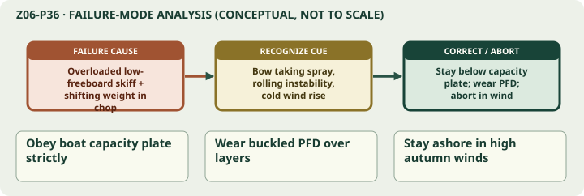

Z06-P36 · Hunting and fishing · New manuscript
Cold-Water Waterfowl Boating and Overloading Limits
Prevent cold-water capsizing in small hunting skiffs, canoes, and johnboats carrying heavy seasonal gear.
When it applies · Late-autumn lakes, marshes, and rivers with near-freezing water.
Equipment · USCG-approved PFD worn buckled, capacity plate check, dry emergency thermal kit, VHF/whistle.

Actions
- Never exceed the boat capacity plate for combined weight of people, dogs, decoys, motor, and gear, keeping loads low and centered to preserve freeboard in chop.[H18, X17]
- Wear a buckled USCG-approved PFD or flotation coat at all times afloat because cold-water shock causes involuntary gasping and rapid swim failure within minutes.[H18, X17]
- Carry waterproof communication and thermal recovery gear on shore or in a clipped dry bag, and cancel open-water crossings whenever autumn gusts build steep waves.[H18, X17]
Failure recognition · Overloading a flat-bottom skiff with wet gear and standing up to shoot in cold wind causes instantaneous capsizing and hypothermia.[H18, X17]
Verify · Load stays well below rated capacity, all occupants wear buckled PFDs, and wind/wave forecast supports safe return.[H18, X17]
Stop or change course · Stop launching or immediately head for the nearest lee shore if waves splash over the bow or gusts intensify.[H18, X17]
Evidence and editorial notes
- H18 · Minnesota DNR · Waterfowl Hunting and Federal Migratory Bird Rules (Current web edition)
- Section: Waterfowl cold-water capsizing and non-toxic shot compliance · Conditions: Wetland and open-water fall waterfowl environments
Support: Cold-water immersion, overloaded boats, and wading drop-offs cause severe fatalities; wear flotation, check forecasts, and verify federal non-toxic shot and species limits.
Limitations: Emergencies and weather shifts override harvest goals; stay ashore in high wind or unverified ice. · Conflicting evidence: None noted.
Editorial note: Reconciles B013 P15-P16 with Z06 water/ice limits. · Specialist reviewer: Water-safety and wildlife reviewer
Primary source · checked 2026-11-25 - X17 · NWS · Hurricane Safety (current web edition)
- Section: Hurricane Safety > Storm Surge, Coastal Flooding and Inland Wind · Conditions: Tropical storms and hurricanes impacting coastal and near-coastal zones
Support: Storm surge and inland rainfall flooding are the deadliest hurricane hazards; obey coastal evacuation orders early, never shelter in low coastal zones or boats and treat calm storm eyes as temporary pauses before violent winds reverse.
Limitations: Hazardous rip currents and swell arrive hundreds of miles ahead of landfall. · Conflicting evidence: None; aligns with READY-EVAC and T13.
Editorial note: Grounds coastal storm-surge and hurricane evacuation cards in Z12. · Specialist reviewer: Emergency management and marine meteorology
Primary source · checked 2026-11-24
Source lineage · New manuscript (Z06 P17 equipment safety) · Classification · New manuscript.